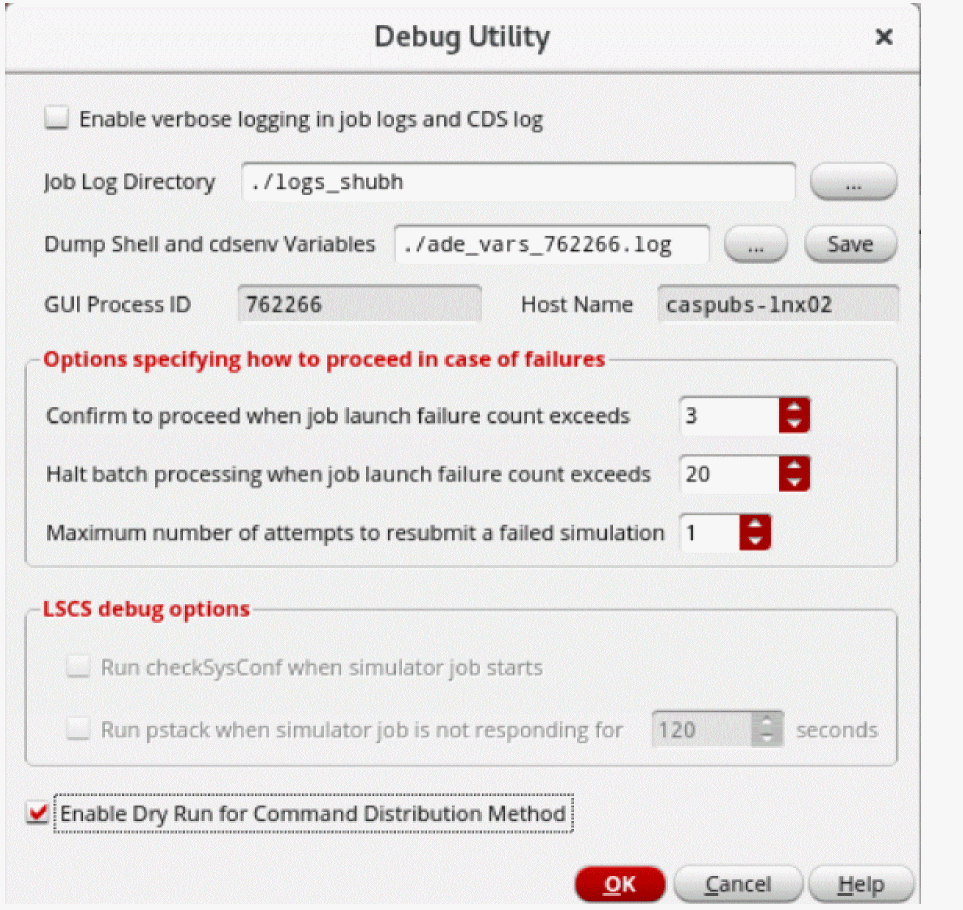
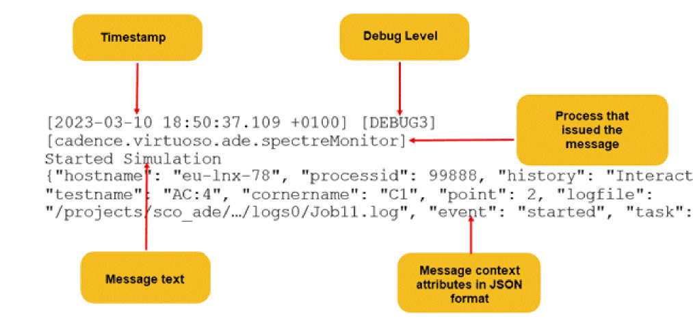
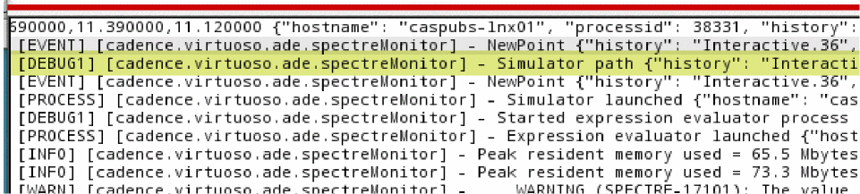
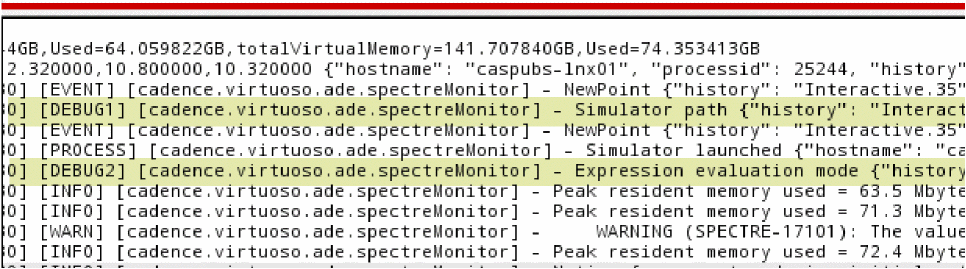
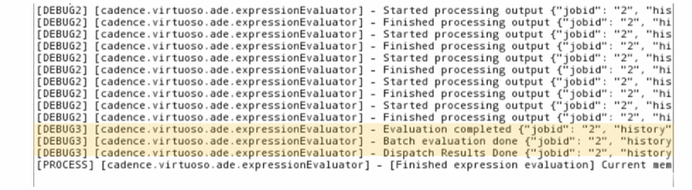
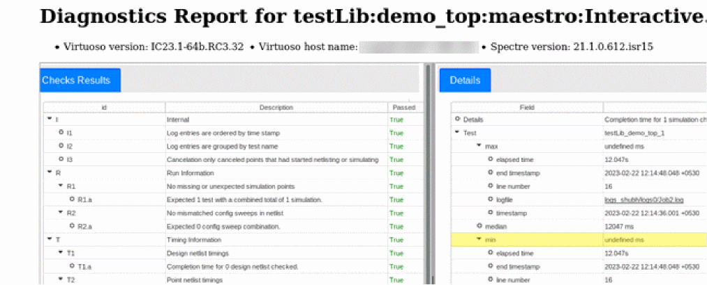

18
Debugging with ADE Diagnostics
While debugging simulations, you need information about the points with erroneous results or the entire history saved for the run. In LSCS job control mode, the tool saves multiple log files that are saved by different components of the LSCS architecture. ADE Assembler runs a list of checks on these log files and generates the ADE Diagnostics report that helps you troubleshoot simulation errors.
The ADE Diagnostics report displays accurate results only when:
- the specified job control mode is LSCS
- the specified simulator is Spectre
- the run mode is set to Single Run, Sweeps and Corners or Monte Carlo Sampling
This report can be generated in other cases as well but the results might not be reliable.
In certain scenarios, you may review the resources being used and take some predefined steps, if necessary. The Debug Utility form provides some additional checks and debugging options that you can use to save useful diagnostic information.
Related Topics
Using the Debug Utility Form
The Debug Utility form provides debugging options that help you gather information to o analyze when troubleshooting simulation runs.
To use the Debug Utility form:
-
Choose Tools – Debug in ADE Assembler.
The Debug Utility form is displayed. -
Review and modify the options given in this form.
By default, the log files show basic error, warning, and information messages. If the information available in the log files is not sufficient and you need more details, select the Enable verbose logging in job logs and CDS log check box. This saves additional details and displays more detailed messages. However, it impacts the performance of the tool and increases the size of the log files significantly.
It is recommended to selectively enable the logs using the following environment variables:-
maestro.debugnetlisting -
maestro.debugsimAndEval -
maestro.debugbeanstalk -
maestro.debugmainVirtuoso
Through these variables, you can specify a higher debug level in which the tool saves additional details and displays more detailed messages. These messages are added to the log files in a machine-readable format which makes it easy to filter and parse the information.
The following figure shows the structure of these messages.For example, if you setmaestro.debugsimAndEvalto1, you can see extra lines marked with [DEBUG1] saved in the log, as shown below.
Similarly, at level2, the tool lets you print user-level debugging information for an error. This also includes status change messages for processes, as shown below.
At level3, the beanstalk monitor is enabled and the tool prints detailed debugging messages suitable for advanced users.In level2and3, there might be some impact on the performance of the tool. Therefore, it is recommended to reset these variables to0after you have finished debugging simulations. -
- Click OK.
Related Topics
ADE Diagnostics Report
Troubleshooting simulation errors using log files can be a difficult task because ADE Assembler saves multiple log files that are generated by different components of the LSCS architecture.
For detailed analysis of such errors and debugging, ADE Assembler runs a series of checks on these log files and displays their results in an HTML report.
Check Results
Th Check Results pane displays the status of the checks and the total number of simulation-related errors in tabular format. This table has four columns.
| Column Name | Description |
|
Reports the number of issues found while performing each check. |
Details
The Details pane provides more details about the checks. To get more information for a specific check, select the related row in the Check Results table and view the Details pane. This information is displayed in a tabular format and may include references to other checks that might have caused the given check to fail. This table has two columns.
Point Mapping
The Point Mapping pane lets you map the points reported in the Details pane to the points in the Results tab in ADE Assembler. This information is displayed in tabular format and lets you easily identify the source of the issue. This table has three columns.
| Column Name | Description |
|
Specifies the design point in the Results tab where the issue was found. |
|
|
Specifies the corner in the Results tab where the issue was found. |
For example, if an evaluation error was found in point 14, the following information is displayed in the Point Mapping pane.
This means that the issue was found at design point 5, for corner C1_0 in the Results tab.
Related Topics
Checks Performed by ADE Diagnostics
Generating the ADE Diagnostics Report
Checks Performed by ADE Diagnostics
The following list gives an overview of the checks performed by ADE Diagnostics. The diagnostics report provides a comprehensive description for these checks.
-
Run Information: Reports the expected number of simulations to be run for a test. Also, lists all the expected config sweep combinations and checks whether the netlist complies with them. -
Timing Information: Reports the maximum, minimum, and average run time for design netlisting, point netlisting, evaluation, and simulation. -
Design Netlisting: Checks whether the design netlisting was successful and reports any errors that occurred during netlisting. -
Point Netlisting: Checks whether the point netlisting was successful and reports any errors that occurred during netlisting. Also, checks whether the SNAP netlist was created before the point netlist and if the links in the netlist point to valid SNAP files. -
Simulation: Checks whether the simulation was successful and if it was run only once. Also, reports any simulation errors that were encountered, along with any unusual, empty, or missing files that were found in the PSF directory. -
Evaluation: Checks whether the evaluation was successful and if it was run only once. Also reports any evaluation errors that were encountered. -
Overlap: Checks whether simulation had started before the netlisting was finished.
Related Topics
Generating the ADE Diagnostics Report
Generating the ADE Diagnostics Report
To view the diagnostics report:
-
Before running a simulation, set the following environment variables in the CIW.
envSetVal("maestro.debug" "netlisting" 'int 3)
envSetVal("maestro.debug" "simAndEval" 'int 3)
envSetVal("maestro.debug" "beanstalk" 'int 3)
envSetVal("maestro.debug" "mainVirtuoso" 'int 3)
Alternatively, select the Enable verbose logging in job logs and CDS log check box in the Debug Utility form. -
In the History tab of the Data View assistant, right-click the history for which you want to generate the diagnostics report, and choose Diagnostics – Analyze Logs.
An HTML report with the titleLog Diagnostics Reportis generated. The subtitle of this report is in the format LibName:CellName:ViewName (historyName). Here, historyName represents the history being used. LibName, CellName, and ViewName represent the names of the library, cell, and view for the test associated to that history. The report also lists the Virtuoso and Spectre versions being used along with the Virtuoso host name.
Related Topics
Checks Performed by ADE Diagnostics
Return to top